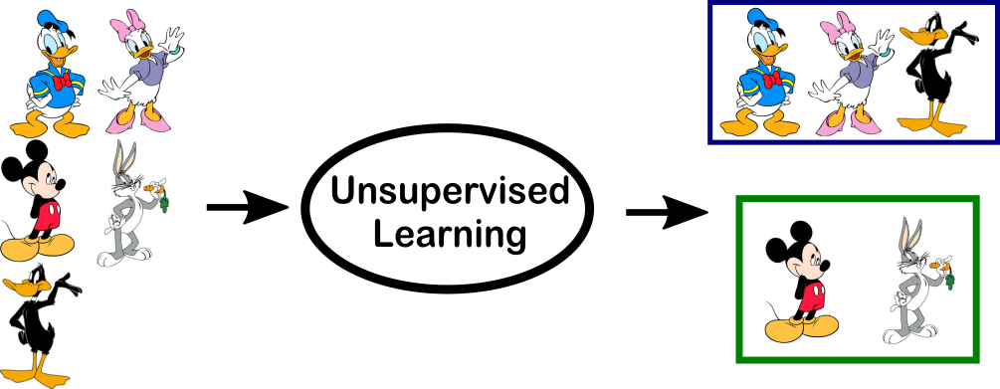

Overview
- The Analytics Continuum
- High level overview of Different analytical tools
- From Descriptive to Prescriptive analysis
- Workflow for Advanced Analytics
- CRISP DM
- What tools do we use
Let’s dig in
class NeuralNetwork:
def __init__(self, x, y):
self.input = x
self.weights1 = np.random.rand(self.input.shape[1],4)
self.weights2 = np.random.rand(4,1)
self.y = y
self.output = np.zeros(self.y.shape)
def feedforward(self):
self.layer1 = sigmoid(np.dot(self.input, self.weights1))
self.output = sigmoid(np.dot(self.layer1, self.weights2))
def backprop(self):
# application of the chain rule to find derivative of the loss function with respect to weights2 and weights1
d_weights2 = np.dot(self.layer1.T, (2*(self.y - self.output) * sigmoid_derivative(self.output)))
d_weights1 = np.dot(self.input.T, (np.dot(2*(self.y - self.output) * sigmoid_derivative(self.output), self.weights2.T) * sigmoid_derivative(self.layer1)))
# update the weights with the derivative (slope) of the loss function
self.weights1 += d_weights1
self.weights2 += d_weights2The ideal data scientist
Brief tour of the analytics continuum
Data and Questions (Historical Paradigm)
Data and Questions (Age of Cheap Data)
What Are Descriptive Analyses?
- Descriptive analyses are the summarization of historical data.
Why are descriptive analyses useful?
They help us:
- Understand our data
- Identify outliers and potential data issues
- Identify baseline models (for prediction problems)
- Answer historical data questions
- What’s the average LOS in the ED
- On average, how many patients get transferred to the ICU per year
- Have our Inpatient length of stays been increasing?
- Which Physicians have the highest variance in outcomes?
Descriptive Analyses
- Summarizing data through:
- Counts and proportions
- Means and Standard Deviations
- Distributional properties like quantiles, skewness, etc…
- Data issues:
- Number of missing values
- Data input errors (e.g. Patient Weight < 0)
- Number of misspelled words in text variables
Diagnostic Analytics
- Diagnostic analyses help us answer the question: “Why did it happen?”
Examples of Diagnostic Analytics?
- Did our intervention in some clinic increase patient satisfaction

Examples of Diagnostic Analytics?
- Which inpatient units are driving length of stay?
Why are diagnostic analyses useful?
They help us:
- Understand relationships in our data
- Directly test hypotheses
- Answer historical data questions:
- Why do certain patient groups have longer LOS
- Do ED volumes increase the day after a holiday
- Why can’t I predict X accurately?
Forms of Diagnostic Analyses
- Understanding relationships in the data through:
- Cross-tabulating data
- Correlation analysis
- Drilling down within aggregates or within an individual row of data
- Traditional Statistical Hypothesis testing (T-test, ANOVA, chi-square test, etc…)
- Regression modeling
Predictive Analytics
AI/ML/Deep Learning
Artificial Intelligence: Designing computer systems to perform tasks which are usually performed by humans
Machine Learning: The study of algorithms that a computer can use to improve its performance on some task:
Deep Learning: A machine learning algorithm inspired by the structure and function of the brain.
Machine Learning
Machine learning is the study of algorithms that a computer can use to improve its performance on some task:
- Identify which patients will need a transfer to the ICU in the next 24 hours
- Predict the number of inpatient admissions for the next 7 days
- What is the likelihood that a patient will not show up for an appointment
- Determine which radiology reports contain a bone with a fracture
- Determine a patient’s diagnosis from admission/nursing notes
- Determine different treatment patterns among patients with the same disease/diagnosis
- Identify patient subgroups that have high hospital utilization
Machine Learning (Supervised Learning)
- Surpervised learning: The computer is provided with both the input data and the output data and design an algorithm to match the two as closely as possible. There are two types:
- Regression: The output is a continuous variable. e.g. cost, length of stay, number of comorbidities etc…
- Classification: The output is a categorical label e.g. icu transfer yes/no, readmission yes/no, patient diagnosis ICD10 codes
Machine Learning (Unsupervised Learning)
- Unsupervised Learning: The computer is provided with only input data (no labels) and attempts to find structure in the data. Often used to discover clusters in the data.

Classification,Regression, Unsupervized
- Identify which patients will need a transfer to the ICU in the next 24 hours
- Predict the number of inpatient admissions for the next 7 days
- What is the likelyhood that a patient will not show up for an appointment
- Determine which radiology reports contain a bone with a fracture
- Determine a patient’s diagnosis from admission/nursing notes
- Determine different treatment patterns among patients with the same disease/diagnosis
- Identify patient subgroups that have high hospital utilization
Machine Learning Process (supervised learning)
- Given some input data X and an outcome y
- Find a function f(X) that maps the values of X -> y
- Such that it minimizes some error e
Inputs to Outputs
Examples of inputs and outputs into machine learning algorithms
- Inputs: Patient age, gender, admit diagnosis.
- Outputs: Length of stay
- Inputs: The number of patients in the emergency department for each day in the last 365 days.
- Outputs: Emergency department volume tomorrow
- Inputs: Patient admission note.
- Outputs: ICD10 code of admit diagnosis
- Inputs: Radiology image of a bone.
- Outputs: yes/no is there a fracture in the image
Classification example
Overfitting
Machine learning performance
- Given our input and data (X, y), we split the data into:
- (X_train, y_train), and (X_test, y_test)
- Our Machine learning problem is to find a model that is trained using:
- (X_train, y_train) but generalizes to (X_test, y_test)
Common Regression Models
- Linear Regression
- Generalized Linear Models
- Generalized Additive Models (non-linear regression)
- Support Vector Machines
- Decision Trees
- Random Forests
- Gradiant Boosting Machines
Common Classifiers
- Logistic Regression
- Generalized Linear Models
- Naive Bayes
- Support Vector Machines
- Decision Trees
- Random Forests
- Gradiant Boosting Machines
Hyperparameters
Outline of steps to creating a machine learning model
- Data Exploration
- Train, Test, Validation data split
- Feature Engineering
- Model Selection
- Hyperparameter Tuning
- Model Evaluation
Feature Engineering
Hand Crafted Features
Feature Engineering Text
“ Ms. Johnson is a 70 year old woman presenting with CHF. Her daughter and husband brought her in to the emergency room shortly after midnight last night. Ms. Johnson uses a cane to walk. She was recently diagnosed with alzheimer’s disease which required hospitalization recently. She is currently on the following medications…. ”
One hot encode words
Extracting topics
Predicting age with topics
Neural Networks
Artificial Neural Networks are a set of frameworks inspired by the brain. They are primarily used for:
- Regression tasks
- Classification tasks
- Unsupervised tasks (finding data representations)
Why Deep Learning?
Why Deep Learning
- Unsure of relationships between variables
- Lots of data
- Certain there are lots of non-linear relationships in the data
- They outperform a lot of older models on image/video tasks
Deep Neural Networks
A neural network with more than one layer
- Feed Forward Networks
- Regression and Forecasting
- Classification, including images
- Convolutional Neural Networks (CNN or ConvNet)
- Classifying images and video
- Natural Language processing
- Drug discovery
- Recurrent Neural Networks (RNNs)
- Time series forecasting
- Prediction in medical care pathways
- Anomoly detection
- machine translation
Prescriptive models
Models used to make decisions
- Simulation modeling
- Build a mathematical model of the world and simulate that word under different scenatios (10k’s times)
- e.g. What would adding an extra CT scanner do to wait times in the ED
- optimization models
- Build a mathematical model of the world
- Relate model parameters to some outcome, and generate some optimal solution
- e.g. How many nurses on a nursing resource team?
- Reinforcement Learning
- How an agent should make decisions to optimize some reward
- e.g. What care pathway to use?
Example NRT
Example NRT GUI
No Free Lunch
- No model is optimal for all problems
Workflow
- Cross Industry Standard for Process for Data Mining (CRISP DM)

Stage 1. Business Objectives
- Set primary business objective
- e.g. Reduce number of patients dying unexpectedly in hospital
- e.g. Reduce the number of patients readmitted within 90 days
- Project plan
- Stages to be executed in the project + duration, resources required, inputs, outputs and dependencies
- Initial assessment of tools and techniques
- At the end of your first phase you should undertake an initial assessment of tools and techniques
Stage 2. Data Collection
- Initial data collection report
- List the data sources acquired together with their locations, methods used to acquire them and any problems encountered (record problems and resolutions)
- Explore Data:
- Distribution of key variables
- Relationships between pairs or small numbers of attributes
- Simple statistical analyses
- Verify data quality
- Outliers
- Data input errors
Stage 3. Data Preparation
Select Data
- Clean Data
- Impute missing values
- Construct Required Data
- transform variables
- Create new variables
- Integrate Data
- Merge data sources
Stage 4. Modeling
- Select Modeling Technique
- Document modeling assumptions
- Set model Evaluation strategy
Model Evaluation
- Model Accuracy may not be the best way to evaluate a model
Evaluation (Classification)
- Accuracy: the proportion of the total number of predictions that were correct.
- Positive Predictive Value: the proportion of positive cases that were correctly identified.
- Negative Predictive Value: the proportion of negative cases that were correctly identified.
- Sensitivity or Recall: the proportion of actual positive cases which are correctly identified.
- Specificity: the proportion of actual negative cases which are correctly identified.
Evaluation Metrics

- Accuracy = (TP + TN)/(TP + TN + FP + FN)
- PPV = (TP)/(TP + FP)
- NPV = (TN)/(TN + FN)
- Sensitvity = (TP)/(TP + FN)
- Specificity = (TN)/(TN + FP)
Evaluation Metrics (Regression)
- Root Mean Squared Error (RMSE)
- R squared
- Adjusted R squared
- Mean Absolute Percent Error (MAPE)
- Mean Absolue Error (MAE)
Stage 5. Evaluation
- Assess the degree to which the model meets your business objectives, or test the model on test applications
Approve the model(s) that meet business success criteria
Review the process and set next steps
Stage 6. Deployment
- Plan Deployment
- Summarize your deployment strategy including the necessary steps and how to perform them.
- Plan Monitoring and Maintenance
Example:
- Predict if a GIM patient will be transfered to the ICU using first 24 hours of data
- Collect Data:
- Timestamps for patient outcomes
- Vital Signs
- Lab Results (~ 500)
- Clinical Orders (~1000s)
- Medication Orders (~1000s)
- Admission Notes
- Nurse Notes
- Radiology reports
Example Models

Tools
- Data Prep/Analysis
- SQL, R, Python, SAS, SPSS, Stata
- Data Visualization
- ggplot, D3, matplotlib, javascript, html
- Deep Learning
- Tensorflow, Keras, Pytorch, CNTK